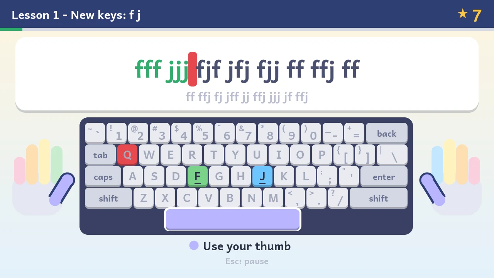

Typing Adventure
A touch-typing tutor for children that turns a Raspberry Pi into a machine that can do one thing: teach typing. It has no operating system, no internet, no apps and no accounts. Switch it on and it is ready.
- No operating system
- No internet, Wi-Fi or Bluetooth
- English · العربية · اردو
- Up to 8 children

A computer that can only teach typing
Children learn to type best with short, regular practice and no distractions. An ordinary computer or tablet comes with a web browser, games, videos, notifications, updates and logins. Typing Adventure removes all of that. The Raspberry Pi runs one program and nothing else, so the only thing a child can do with it is practise typing.
No internet, by design
The program contains no networking code at all: no Wi-Fi, no Bluetooth, no Ethernet driver. It can't go online, and nothing online can reach it. There's nothing to set up or filter.
No operating system
There is no Linux, Windows or Android underneath. The SD card holds the Pi's boot firmware, two settings files and the tutor. The tutor itself drives the screen, keyboard, card and sound.
On in seconds, off at the plug
It starts in a few seconds and saves progress after every lesson, so turning it off at the wall is fine. There are no updates, pop-ups or passwords to deal with.
Three languages, written properly
Full courses in English, Arabic and Urdu. Arabic letters join and run right to left. Urdu is drawn in its traditional Nastaliq script. Menus show all three languages.
Shared by the family
Up to eight children each get their own name, colour and progress, kept in a plain text file on the SD card. Nothing leaves the machine.
Fun that is still practice
Stars, points, streaks, 13 badges and a balloon-popping game. The game only uses keys the child has already learned, so playing it is practice too.
How it teaches
Each course follows the classic touch-typing order: fingers rest on the home row, and each new key is learned with the finger that should press it.
- Home row firstStarting from the two keys with bumps: F J in English, ب ت in Arabic, ف ج in Urdu. Then one finger pair at a time.
- Top row, then bottom rowTwo keys per lesson, most frequent letters first, so real words come early.
- Review lessonsAfter each group, a lesson that mixes everything learned so far.
- Shift, punctuation, numbersCapitals (or the Arabic and Urdu Shift letters), punctuation, then the number row.
- Final challengeWhole, real sentences using everything.
Only letters the child already knows
Every new-key lesson goes from drills of the new keys, to mixes with keys learned earlier, to real words spelled only with letters already taught:
aaa ;;; a;a ;a; ;; ;;ala affa k;d la daa fkafask salads fads salad ladFrom lesson 4, which adds A and ; to the six keys already learned.
Arabic and Urdu words are spelled correctly: words that need a hamza wait until the hamza lesson, and full stops wait until the punctuation lesson.
A colour for every finger
The on-screen keyboard lights up the next key in the colour of the finger that should press it, and a pair of coloured hands shows which finger that is, like colour-coded typing gloves.
Accuracy first
Mistakes can't be erased with Backspace. The child presses the right key to carry on, which builds accuracy before speed. The results screen lists the keys that caused the most mistakes.
| Result | Needs |
|---|---|
| ★★★ passed | 90% accuracy |
| ★★★ | 95% accuracy |
| ★★★ | 98% accuracy and the lesson's target speed (8 to 18 words per minute) |
Good habits, gently
If a child holds Shift with the same hand as the capital letter, a tip suggests the other hand. If Caps Lock is on, the tutor says so.
The courses
| Course | Lessons | Keyboard layout |
|---|---|---|
| English | 23, ending with number keys and whole sentences | US English |
| العربية Arabic | 26, including the hamza forms and the number keys | Standard Arabic (101). A bilingual keyboard with Arabic letters printed on it matches the screen exactly. |
| اردو Urdu | 26, in Nastaliq script (numbers still to come) | Urdu phonetic (CRULP): each letter sits on the English key that sounds alike, ا on A, ب on B, so an ordinary English keyboard works. |
Every screen
Click any screenshot to see it full size, then use the arrow keys to step through them.
These screenshots come from the project's desktop simulator. It runs the same tutor code as the Pi and draws the same pixels, with key presses typed by a script.
Starting up
The lesson map
A lesson
Gentle corrections
Results and badges
Balloon Pop
A game that only uses the keys learned so far, with single letters or whole words. Every 10 balloons clears a level, and each level is faster. The score is levels cleared × letters in play (doubled for words), so learning more letters raises the score. Each set of letters keeps its own best level, and the start screen shows the top score of all players, with the record holder's name.
العربية The Arabic course
The screens switch to Arabic and run right to left. Letters join as they would in print, including the lam-alef ligature, and numbers are shown in Arabic digits.
اردو The Urdu course
Urdu is written in Nastaliq, where letters sit on a sloping line and change shape with their neighbours. The tutor shapes it with the same text engine used by web browsers, so words look the way they do in books.
For grown-ups
What you need
A Raspberry Pi 3 B+, a power supply and a memory card, plus a screen and keyboard you may already have.
Raspberry Pi 3 Model B+
The tutor is built for and tested on this exact board. Newer models such as the Pi 4 and Pi 5 won't start it. Buy it from an approved reseller. A case is worth getting too, so small hands can't touch the board.
Power supply, micro-USB, 5.1 V 2.5 A
The official Raspberry Pi micro-USB supply is the safe choice. Phone chargers often give too little power, which can make the keyboard or the whole Pi unreliable.
A microSD card
Any size works, since the tutor uses only 64 MB. A branded 8 to 32 GB card is ideal. Flashing the card erases it, so use an empty one. You also need a way to connect it to a computer, such as an SD slot or a small USB card reader.
A USB keyboard
Any wired USB keyboard, or a wireless one that comes with its own USB receiver. Several keyboards can be plugged in at once.
- Bluetooth-only keyboards won't work: the tutor has no Bluetooth.
- For Arabic, an Arabic/English keyboard with both alphabets printed on the keys matches the screen exactly.
- For English and Urdu, an ordinary US English keyboard is right.
A screen with HDMI, and an HDMI cable
Any computer monitor or TV with an HDMI input. The Pi 3 B+ has a full-size HDMI socket, so a normal HDMI cable fits.
Headphones or speakers
For the key clicks and celebration sounds: headphones or powered speakers with a 3.5 mm plug, into the Pi's headphone jack. Speakers built into an HDMI screen also work after changing one setting.
Not needed: a mouse, a network cable, Wi-Fi, an account, or any software on the Pi. The only software you install is on your own computer, to write the card once.
Set it up
You write the tutor onto the microSD card once, using any Windows, Mac or Linux computer. After that the Pi never needs another computer.
-
Download the card image
Go to the latest release and download
typing-adventure-vX.Y.img.xz(a few megabytes). There is no need to unpack it. -
Install Raspberry Pi Imager
Imager is the Raspberry Pi Foundation's free tool for writing cards. Get it from raspberrypi.com/software for Windows, macOS or Linux (Ubuntu:
sudo apt install rpi-imager). -
Write the image to the card
- Put the microSD card in your computer and open Imager.
- Device: choose Raspberry Pi 3.
- Operating system: scroll to the bottom and choose Use custom, then pick the
.img.xzfile you downloaded. - Storage: choose your microSD card. Check that it really is the card: everything on it will be erased.
- If Imager offers OS customisation (Wi-Fi, user name and so on), choose No. None of it applies, since there's no operating system.
- Write, wait for it to verify, then take the card out.
You can use balenaEtcher instead, or
ddon Linux and macOS. Both accept the compressed file.Alternative without flashing: format a card as FAT32, then unzip
typing-adventure-vX.Y-sdcard-files.zipfrom the same release and copy its files onto the card, not into a folder. Windows only offers FAT32 for cards of 32 GB or less. For bigger cards, use the SD Card Formatter or the flashing method above. -
Plug everything in
Put the card in the slot under the Pi (label facing away from the board). Connect the screen, keyboard and headphones. Connect the power supply last: the Pi switches on as soon as it has power.
-
Create players and start
Choose New player, type a name (Tab switches between English, Arabic and Urdu letters), pick a colour with ← → and press Enter. Choose a course, then lesson 1. Progress is saved on the card after every lesson and game.
Keys
| Key | What it does |
|---|---|
| ← → ↑ ↓ | Move around menus and the lesson map |
| Enter | Choose; start a lesson; next lesson on the results screen |
| Esc | Go back; pause a lesson |
| R | Try the lesson again, on the results screen |
| Tab | Switch the letters used for a name; letters or words in Balloon Pop |
| F2 | Sound on or off |
| Delete | Remove the selected player, on the players screen (then Y to confirm) |
| F12 | System log, for checking hardware (arrows, PgUp/PgDn, Home/End scroll it) |
Settings
The card has a small text file, cmdline.txt, holding the settings on a single line. Open it in any text editor on your computer. By default it contains:
sounddev=sndpwm usbspeed=full| Setting | Meaning |
|---|---|
sounddev=sndpwm | Sound through the headphone jack (default) |
sounddev=sndhdmi | Sound through speakers built into the HDMI screen |
sounddev=none | No sound at all |
usbspeed=full | Leave this in. Without it, some keyboards aren't recognised. |
Updating to a new version
The whole tutor is one file on the card, kernel8.img. To update, replace just that file.
Switch off and take out the card
Unplug the Pi's power, remove the microSD card and put it in your computer. It appears as a drive called TYPING.
Download the new
kernel8.imgFrom the latest release, download the file called
kernel8.img. (Direct link.)Copy it onto the card
Copy it onto the TYPING drive, replacing the file with the same name. Eject the card safely, put it back in the Pi and switch on.
Don't touch the other files when updating. progress.txt holds every player's progress (progress.txt.bak is the previous copy), and cmdline.txt holds your settings. Flashing a whole new image would erase them. If you ever want to, copy progress.txt off the card first and put it back afterwards.
While the card is in your computer, it's a good moment to back up progress.txt. It's plain text and works on any card with the tutor on it.
To hear about new versions, use Watch → Custom → Releases on the GitHub page.
If something doesn't work
"Please plug in a keyboard" stays on the screen
Check the keyboard is plugged into one of the Pi's four USB ports, not the network socket next to them. For a wireless keyboard, plug in its USB receiver and check its batteries and power switch. Bluetooth-only keyboards aren't supported.
After about 6 seconds the screen shows a USB log. If the keyboard still isn't found, take a photo of it and include it when asking for help. Check that usbspeed=full is still in cmdline.txt.
The screen stays black
Make sure the screen is on the right HDMI input, and that the HDMI cable was connected before the power. Unplug the power, wait a few seconds and plug it in again.
Check the card is pushed fully into the slot. Try writing the card again. A red light on the Pi with no green flicker usually means it can't read the card. A weak power supply can also cause problems.
There's no sound
Press F2, in case sound was turned off. Then check cmdline.txt: use sounddev=sndpwm for the headphone jack or sounddev=sndhdmi for the screen's speakers, keeping everything on one line.
The players screen warns that progress can't be saved
The tutor couldn't write to the card. If the card sits in an adapter, check the adapter's small lock switch. Otherwise the card may be worn out: copy progress.txt to a new card set up as above.
I'd like to see more detail about the hardware
F12 opens the system log on any screen. For keyboard problems, each release also includes kernel8-debug.img, which logs extra USB detail. Copy it onto the card and rename it to kernel8.img. To go back, copy the normal kernel8.img over it.
What's inside, and what isn't
The goal is a machine that can only ever be a typing tutor. Here is everything on the card:
| File | What it is |
|---|---|
kernel8.img | The tutor (about 3 MB, mostly fonts) |
bootcode.bin, start.elf, fixup.dat | Raspberry Pi boot firmware, which every Pi needs, with its licence file LICENCE.broadcom |
config.txt, cmdline.txt | Boot settings |
progress.txt | Created on first use: players and their progress, as plain text |
Built in
- Screen output over HDMI
- USB keyboards, and nothing else over USB
- Reading and writing the SD card
- Sound through the headphone jack or HDMI
Left out
- Any operating system, shell or console
- Networking of any kind: no internet code, no Ethernet driver
- Wi-Fi and Bluetooth: the wireless chip can't do anything until an operating system loads firmware into it, and nothing here does
- USB storage, mice, gamepads, audio, printers, serial and network adapters. A USB stick plugged in does nothing.
The build checks the SHA-256 checksums of the compiler it downloads and of the Pi firmware. Third-party code (the Circle bare-metal library, and HarfBuzz and stb_truetype for Urdu) is pinned to fixed versions and only ever reads the fonts built into the tutor.
Limits: the Pi's boot firmware is closed source and runs before the tutor, as on every Raspberry Pi. Anyone who can reach the Pi can swap the SD card, so physical security is up to you.
Build it yourself
On a Linux PC with make, git, curl, python3 (with Pillow and fontTools), sfdisk, mkfs.vfat and mtools. The Arm compiler is downloaded and checksum-verified automatically.
git clone --recurse-submodules <this repository>
cd pi-typing
make # build/typing-adventure.img and build/sdcard/
make test # desktop simulator tests, screenshots in build/shots/
make qemu # a variant that runs in QEMU (raspi3b)Pushing a version tag (git tag v1.1 && git push origin v1.1) builds, tests and publishes a release.
The tutor itself (src/core/) has no hardware code. A thin layer (src/pi/) connects it to the Pi through Circle, and a desktop simulator (src/sim/) runs the same code with scripted key presses and writes PNG screenshots. The screenshots on this page are regenerated with scripts/site-screenshots.sh.
The README covers the code layout, the Arabic and Nastaliq text rendering, and the Circle patches.